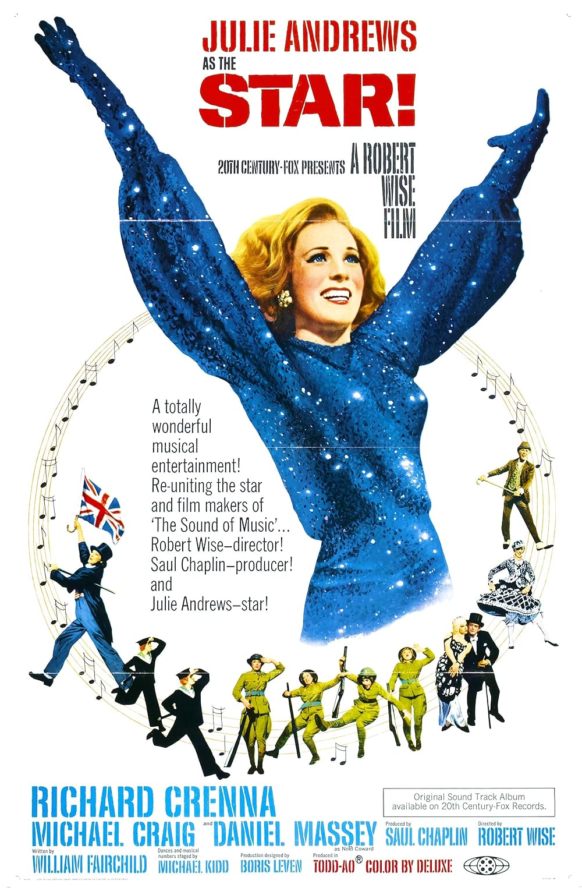

Star!
41st Academy Awards
(Oscars 1969)
7 Nominations, 0 Awards
| Nominations | ||
|---|---|---|
| Category | Nominees | Result |
| Actor in a Supporting Role | Daniel Massey | Nominated |
| Cinematography | Ernest Laszlo | Nominated |
| Art Direction | Boris Leven, Howard Bristol, and Walter M. Scott | Nominated |
| Costume Design | Donald Brooks | Nominated |
| Sound | 20th Century-Fox Studio Sound Department | Nominated |
| Music (Score of a Musical Picture--original or adaptation) | Lennie Hayton | Nominated |
| Music (Song--Original for the Picture) "Star!" |
Jimmy Van Heusen and Sammy Cahn | Nominated |